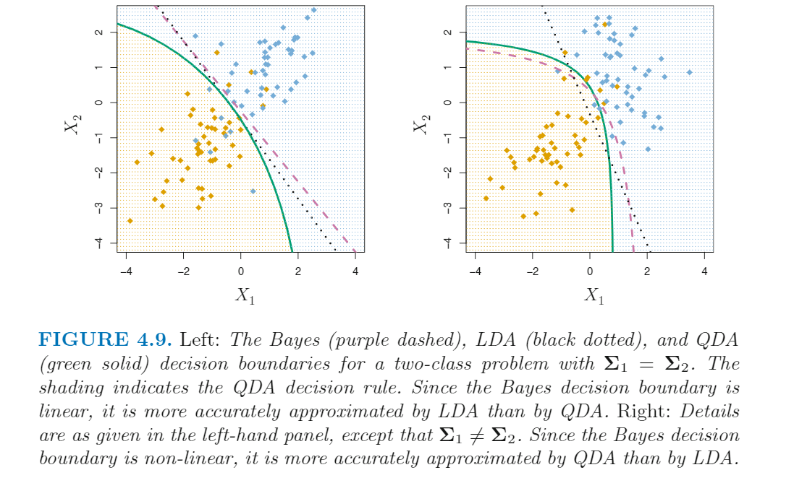

<!DOCTYPE html>


<html lang="zh-CN">


<head>
  <meta charset="utf-8" />
    
  <meta name="viewport" content="width=device-width, initial-scale=1, maximum-scale=1" />
  <title>
    逻辑回归及其他分类变量分析方法 |  VincereZhou&#39;s blog
  </title>
  <meta name="generator" content="hexo-theme-ayer">
  
  <link rel="shortcut icon" href="/images/mojie.jpg" />
  
  
<link rel="stylesheet" href="/dist/main.css">

  <link rel="stylesheet" href="https://cdn.jsdelivr.net/gh/Shen-Yu/cdn/css/remixicon.min.css">
  
<link rel="stylesheet" href="/css/custom.css">

  
  <script src="https://cdn.jsdelivr.net/npm/pace-js@1.0.2/pace.min.js"></script>
  
  

  

<link rel="alternate" href="/atom.xml" title="VincereZhou's blog" type="application/atom+xml">
</head>

</html>

<body>
  <div id="app">
    
      
    <main class="content on">
      <section class="outer">
  <article
  id="post-逻辑回归及其他分类变量分析方法"
  class="article article-type-post"
  itemscope
  itemprop="blogPost"
  data-scroll-reveal
>
  <div class="article-inner">
    
    <header class="article-header">
       
<h1 class="article-title sea-center" style="border-left:0" itemprop="name">
  逻辑回归及其他分类变量分析方法
</h1>
 

    </header>
     
    <div class="article-meta">
      <a href="/posts/749a327e/" class="article-date">
  <time datetime="2021-05-25T03:01:18.000Z" itemprop="datePublished">2021-05-25</time>
</a> 
  <div class="article-category">
    <a class="article-category-link" href="/categories/%E7%90%86%E8%AE%BA%E5%AD%A6%E4%B9%A0/">理论学习</a> / <a class="article-category-link" href="/categories/%E7%90%86%E8%AE%BA%E5%AD%A6%E4%B9%A0/%E7%BA%BF%E6%80%A7%E6%A8%A1%E5%9E%8B/">线性模型</a>
  </div>
  
<div class="word_count">
    <span class="post-time">
        <span class="post-meta-item-icon">
            <i class="ri-quill-pen-line"></i>
            <span class="post-meta-item-text"> 字数统计:</span>
            <span class="post-count">6.3k</span>
        </span>
    </span>

    <span class="post-time">
        &nbsp; | &nbsp;
        <span class="post-meta-item-icon">
            <i class="ri-book-open-line"></i>
            <span class="post-meta-item-text"> 阅读时长≈</span>
            <span class="post-count">23 分钟</span>
        </span>
    </span>
</div>
 
    </div>
      
    <div class="tocbot"></div>


  
    <div class="article-entry" itemprop="articleBody">
       
  <p>ISL 真是好书！</p>
<span id="more"></span> 
<h1>资料</h1>
<p><a target="_blank" rel="noopener" href="https://www.statlearning.com/">An Introduction to Statistical Learning</a>，下文简称 <strong>ISL</strong></p>
<h1>概述</h1>
<p><strong>线性回归的因变量都是连续变量</strong>（例如人的身高），但是生活中我们也有很多因变量是分类变量的情况。比如：</p>
<ol>
<li>一位来到急诊室的病人，具有很多的临床症状，这些症状可能是由三种疾病导致的，那么到底这个病人是患上了什么疾病呢？</li>
<li>邮箱区分哪些邮件是垃圾邮件，哪些邮件不是垃圾邮件</li>
<li>全基因组关联分析：确定哪些基因突变与疾病有关联</li>
</ol>
<p>在 ISL 书中，分析的例子是基于一个人的年收入和每月信用卡余额来预测这个人是否会拖欠信用卡付款。数据如下图所示</p>
<p></p>
<h1>为什么不用线性回归？</h1>
<p>假设我们想要基于一个急诊室的病人的症状来预测他/她患了什么病。在这个简化的例子中，假设我们有三个可能的疾病：stroke, drug overdose, epileptic seizure 。 我们可以将这些重编码为数字，如下：</p>
<p></p>
<p>如果这里我们用最小二乘的方式来预测 Y，并且我们认为这三者之间的差异是相同的。<strong>实际上我们这么重编码数字是没有道理的</strong>。比如，有些人还可能用另外一种编码方式：</p>
<p></p>
<p><strong>如果换了一种重编码方式，那么这三者之间的关系就完全变了。</strong></p>
<p>如果反应变量的值是有序的，例如 <em>mild</em>, <em>moderate</em>, <em>severe</em> ，这样我们把这几个变量编码为1,2,3 还有一点道理。但是这么做还不是一种自然的方式。</p>
<p>对于一个<strong>二变量</strong>的分类性状，情况就好一点。比如如果病人的病症只有两种情况：stroke 和 drug overdose 。 我们可以将这两个变量转换为哑变量。</p>
<p></p>
<p>我们可以对这个二变量进行线性回归，如果预测值大于0.5， 我们认为是 drug overdose；反之我们认为 stroke 。在这种情况，<strong>即使颠倒了重编码方法，预测结果还是一样的</strong>。这种情况下，线性回归是有意义的，我们得到的预测值可以理解为 <em>drug overdose</em> 的<strong>可能性</strong>，但是<strong>线性回归的预测值可能会超出 [0,1] 区间</strong>，使得这个结果难以解释。</p>
<h1>衡量分类变量模型的准确性</h1>
<p><em><strong>training error rate</strong></em> :  公式如下，其中 <code>I()</code> 为哑变量，如果预测值和真实值不同则为1，相同则为0。这个式子其实就是计算 traing data 有多少比例的预测值预测错了。</p>
<p style=""></p><p>但是，实际上我们更关心的是 <em>test data</em> 的结果，同样的我们计算 <em><strong>test error rate</strong></em> 。一个好的模型，我们得到的  <em><strong>test error rate</strong></em> 应该是很低的。</p>
<h1>逻辑回归</h1>
<p>逻辑回归（logistic 回归）采用的因变量是<strong>某一个水平的概率</strong>。</p>
<p>线性回归与逻辑回归比对的结果如下：</p>
<p></p>
<p>对于 ISL 的 Default 数据集（信用卡是否违约）， 逻辑回归会预测违约的概率。例如，基于 balance 因子的预测可以写成</p>
<p></p>
<p>简写为 p(balance)，如果这个值大于0.5，我们可能预测会违约（这个阈值也可以调整）。</p>
<h2 id="逻辑回归模型">逻辑回归模型</h2>
<p>常规的线性模型如下：</p>
<p></p>
<p>线性模型的问题在于预测值会超出[0,1]区间，这是不合理的。为了避免预测值超出[0,1]区间，我们设定逻辑回归的预测函数为：</p>
<p></p>
<p>个人理解：β0+β1X 就是原来的线性模型的预测函数，范围是负无穷到正无穷。因此，e<sup>β0+β1X</sup> 的范围就是 (0,+∞] 。整个 p(X) 在这个范围内是递增函数（由求导得到，易知导数永远大于0），整个p(x) 的两个极值在自变量的两个端点取得，范围为 (0,1)</p>
<p>为了求解这个预测函数，我们需要用到<strong>最大似然法</strong>。</p>
<p>对上面的函数进行变换，我们得到下面这个式子。这个式子 p(x)/[1-p(x)] 称为 <em>odds</em> ，这个式子的值的范围为 (0, ∞)</p>
<p></p>
<p>如果我们对左右两边取对数，我们可以得到下面这个式子：下式中左侧称之为 <em>log-odds</em> 或者 <em>logit</em> 。我们可以看到 <em>logit</em> 是符合线性模型的。</p>
<p></p>
<p>我们这里估计得到的 β1 的值虽然和 p(x) 不是线性相关，但是<strong>如果β1 是正数，说明增加 X 的值，会提高 p(x)</strong>。</p>
<h2 id="估计回归系数">估计回归系数</h2>
<p>逻辑回归中的 β0 和 β1 是未知的，必须通过已有的 training data 来进行估计。在线性模型中，我们采用最小二乘法来估计线性回归的系数。虽然这里我们也可以用最小二乘来拟合模型，当我们偏向采用更一般的方式 - <strong>最大似然法</strong>。最大似然法用于拟合逻辑回归的基本思路是：<strong>我们想寻找一组 β0 β1 的值，使得每个个体p(x) 的预测值和观测值尽可能的接近</strong>。在这个例子中，也就是对于存在违约的个体的预测值要接近1，对于不存在违约的个体的预测值要接近于0。</p>
<p>我们可以把上面这个思路用一个 <abbr title="likelihood function">似然函数</abbr> 来表示，如下图所示：</p>
<p></p>
<p>使得这个似然函数<strong>最大</strong>的一组 β0 和 β1 的值就是我们选中的估计值。</p>
<p>在ISL书中，最大似然法是一种估计<strong>非线性模型</strong>参数的一种普遍的方法。<strong>在线性模型中，最小二乘法实际是最大似然法的一个特例</strong>（理由呢？）。</p>
<p>回到信用卡的例子，如果我们采用逻辑回归，结果如下图。我们可以看到 β1 的估计值为正数，说明 随着 balance 的增加，违约的概率在增加。</p>
<p></p>
<h2 id="预测">预测</h2>
<p>一旦我们得到了系数的估计值，我们就可以带入逻辑回归的公式进行预测。例如，加入我们要预测 balance 为 1000 时的违约概率：</p>
<p></p>
<p>如果自变量是分类变量也是可以的，不过需要先转变为<strong>哑变量</strong>。比如下面是“是否是学生” 的分析结果，我们可以看到学生违约的风险高于非学生群体。</p>
<p></p>
<p>预测值如下</p>
<p></p>
<h2 id="多重逻辑回归">多重逻辑回归</h2>
<p>如果我们多个自变量，我们可以将逻辑函数扩展如下：</p>
<p></p>
<p></p>
<p>之后我们还是采用最大似然法来估计这些系数。</p>
<p>比如，我们用三个自变量去预测信用卡违约，结果如下，我们可以看到 balance 和 student[Yes] 的 P 值都很小，说明这这两个自变量都是显著的。但是<strong>stdent[Yes] 的系数是负数</strong>，说明学生违约的概率更小，这和上面的简单逻辑回归的结论相反。</p>
<p></p>
<p>下图就说明了这个矛盾的结论：左图说明了，如果固定了 Balance 因子，既在相同的 Balance 水平下，学生的违约风险更低；右图中是不管Balance 和 income 水平，计算所有的学生和非学生的结果，可以看到学生的违约风险更高。这对于信用卡发放的决策者而言这是一个重要的区别，<strong>如果不知道balance信息，学生的违约风险比非学生更高； 但是如果在相同的balance水平下，学生比非学术的违约风险要低。</strong></p>
<p></p>
<p>发生这种矛盾的原因还是<strong>自变量之间的相关</strong>，这种现象称之为 <em>confounding</em> 。是否是学生 与  balance 绝对是存在相关关系的，或者说学生的balance 的 分布 和 非学生的 balance 分布是不一样的。</p>
<p>我这里可以通过画图来看一下，代码和图片结果如下。我们可以看到学生和非学生的 balance 的分布基本还是类似于正态分布，但是学生的均值更高，而且右侧的尾巴更肥。我们可以通过这个图简单地总结一下，就是学生群体balance的值倾向于比非学生群体更高。</p>
<figure class="highlight r"><table><tr><td class="gutter"><pre><span class="line">1</span><br><span class="line">2</span><br></pre></td><td class="code"><pre><span class="line">library(ggplot2)</span><br><span class="line">ggplot(Default, aes(x=balance, fill=student)) + geom_histogram(position = <span class="string">&#x27;identity&#x27;</span>, alpha = <span class="number">0.4</span>, bins=<span class="number">60</span>)</span><br></pre></td></tr></table></figure>
<p></p>
<h2 id="大于2个水平的因变量">大于2个水平的因变量</h2>
<p>如果有多个水平的话，一般就不用逻辑回归了。我们会用 <abbr title="discriminant analysis"><strong>判别分析</strong></abbr>  方法。</p>
<h1><abbr title="Linear Discriminant Analysis, LDA">线性判别分析</abbr></h1>
<p>对于大于2个水平（K&gt;2）的因变量，我们假定我们获取因变量的<strong>先验分布</strong>（即一个随机挑选的观察值来自于其中某个水平的概率），记为下面的符号。</p>
<p style=""></p><p>另外一个式子就是基于某个因变量水平的自变量分布，见下式。如果这个值很高，说明当Y=k时，X=x 的概率很大。</p>
<p style=""></p><p>我们通过<strong>贝叶斯定理</strong>，就可以得到基于某个X的Y的条件概率，即<strong>后验概率</strong>，我们用 <em><strong>p<sub>k</sub>(x)</strong></em>  来表示</p>
<p style=""></p><p>在这个公式里，因变量的先验分布比较容易获得，我们先对总体进行随机抽样，之后算一下每个水平的比例即可。但是 f<sub>k</sub>(x) 就不是很容易获得。<strong>如果我们可以估计  f<sub>k</sub>(x)</strong> ，我们就可以计算不同因变量水平的<strong>后验概率</strong>，我们认为后验概率最大的水平就是预测值。</p>
<h2 id="p-1的线性判别分析">p=1的线性判别分析</h2>
<p>如果只有一个自变量，我们需要首先估计  f<sub>k</sub>(x) ，我们需要先做一些假设。</p>
<p>我们假设  <strong>f<sub>k</sub>(x) 是符合正态分布的</strong> （假设1），在一个自变量的情况下，即符合下面这个式子：</p>
<p style=""></p><p>其中 u<sub>k</sub> 和 σ<sup>2</sup><sub>k</sub>  分别为第K个水平的均值和方差。我们进一步假设<strong>所有的水平的方差均相同</strong>（假设2），即如下式，可以简化为 σ<sup>2</sup> 。</p>
<p style=""></p><p>将这个式子带入到上面计算  <em><strong>p<sub>k</sub>(x)</strong></em> 的式子中，得到</p>
<p style=""></p><p>计算所有水平的后验概率，选择<strong>后验概率最大</strong>的水平。我们可以看到对所有的水平，分母部分都是一样的，因此我们只需要关注分子部分，只要找对分子最大的水平。对分子部分采用 log 函数，剔除常数部分，我们得到下面这个式子。这个式子值最大的水平，就是后验概率最大的水平</p>
<p style=""></p><p>假设 K=2，并且 π<sub>1</sub> = π<sub>2</sub> 。那么如果满足下面这个式子，则最终分配为水平1；否则则为水平2</p>
<p style=""></p><p>在这种情况下，<abbr title="Bayes decision boundary">贝叶斯决策线</abbr> 为</p>
<p style=""></p><p>但是在实际中， π<sub>k</sub> , μ<sub>k</sub> ， σ<sup>2</sup>  这些参数都是未知的，我们需要先估计这些常数，再估计 <em>p<sub>k</sub>(x)</em></p>
<p style=""></p><p>这里 n 是所有的观测值数目，n<sub>k</sub> 是观测值为水平k 时的数目。至于 π<sub>k</sub> ，有先验就用，没有就从 training data 计算一下</p>
<p style=""></p><p>将上面的参数估计值带入下式，计算得到值最大的水平</p>
<p style=""></p><p>为什么判别分析称为<strong>线性</strong>判别分析呢？因为 <em>discriminant functions</em> δ<sub>k</sub>(x) 是 x 的线性函数。</p>
<h2 id="p-1的线性判别分析-2">p&gt;1的线性判别分析</h2>
<p>我们现在看多个自变量的情况，并且这些自变量服从<strong>多元正态分布</strong>（每个变量均服从一维正态分布）， 下图为两个变量时服从多元正态分布的概率密度图。</p>
<p></p>
<p>为了表示 p维的随机变量X 服从多元正态分布，我们写作</p>
<p style=""></p><p>其中，<em>μ</em> 为均值，是一个p维的向量。</p>
<p style=""></p><p>方差分布为 Σ , 为 <em>p × p</em> 的矩阵。</p>
<p>最后，多元正态分布定义为</p>
<p style=""></p><p>类似于p=1的判别分析，这里假定因变量所有水平的观测值均服从<strong>方差相同的</strong>多元正态分布。</p>
<p>p&gt;1的判别函数如下</p>
<p style=""></p><p>以下图为例，作图是三种水平所有观测值结果，圆圈为95%的概率的范围，虚线为画出的贝叶斯决策线；右图为各随机抽取了20个样本的结果，实线为抽样结果的贝叶斯决策线。</p>
<p>个人理解：这张图给了我一个提示，<strong>分类变量的每个水平必须是能几乎截然分开的</strong>，才能进行分析。不然对于判别分析，无法画出决策线。所以我感觉进行分析前有必要先进行一下可视化，看一下分类变量的各个水平的设置是否合理，有没有两个水平实际是差不多同一个水平的情况。</p>
<p></p>
<p>这里我们同样需要估计这些参数，类似于p=1的情况</p>
<p>从判别函数的形式看，判别函数依然是 X 的线性转换，这就是线性判别分析中线性的由来。</p>
<p>如果对信用卡违约的数据进行判别分析，因变量是<strong>是否违约</strong>，自变量是 <em>credit card balance</em> 和 <em>student status</em> ，通过对 10,000 个 traing samples 进行建模，我们得到的 <em>training error rate</em> 的结果是 2.75% 。这个结果看上去很好，但是有两个注意事项：</p>
<ol>
<li>首先，<em>training error rate</em>  通常会低于 <em>test error rate</em>，也就是说 test data 的结果通常会更差一点，这是因为我们是根据 <em>training data</em> 来拟合的模型参数。如果参数 p 除以 样本 n 的比例越高，我们可能越可能遇到<strong>过拟合</strong>问题。</li>
<li>其次，由于 <em>training data</em> 中只有3.33%的个体违约，因此一个最简单的 <em>classifier</em> 可以将所有个体都预测为不会违约，无论这个人的 credit card balance 和 student status 是什么情况，这个 <em>classifier</em> 的 <em>trainging error rate</em> 就是 3.33%。这种情况下仅仅比上面的 2.75% 略高。</li>
</ol>
<p>在实际情况中，一个二分类的 <em>classifier</em> 会产生两种错误：它可能将一个不违约的个体判定为违约，或者将违约的个体判定为不违约。这两种错误发生的原因，通常是需要关注的地方。我们一般会通过 <em><strong>confusion matrix</strong></em> 来查看一下，我们可以看到在真实为NO的个体中（9667），总共有23个个体是错误预测的，这看上去错误概率很低。但是，在总共333个违约个体中，总共有252（75.7%）的个体被错误预测为No。因此，<strong>虽然总的 <em>training error rate</em>  很低，但是针对违约的个体的<em>error rate</em> 很高</strong>。由于信用卡公司做预测的目的是为了确定高风险可能违约的用户，这种预测情况肯定是无法接受的。</p>
<p></p>
<h3 id="sensitivity-和-specificity">sensitivity 和 specificity</h3>
<p>有两个概念可以说明一个 <em>classifier</em> 的表现， <em><strong>sensitivity</strong></em> 和 <em><strong>specificity</strong></em> 。在这个例子中，<em>sensitivity</em> 就是违约者被正确预测的概率，这里是24.3%；<em>specificity</em> 就是非违约者被正确预测的概率，这里是 99.8%。</p>
<p>为什么判别分析在违约个体的表现如此糟糕呢？或者说，为什么 <em>sensitivity</em> 如此低？如我们所见，判别分析会采用贝叶斯方法，会含有最低的 <em>total error rate</em> ，也就是说会产生最少的总的错误分类的数目，无论这些错误分类原本来自于哪个分类。但是基于信用卡公司的角度，肯定是希望尽量避免将会违约的个体判定为不会违约的错误，相比之下，将不会违约的个体判定为违约问题则没有那么严重。因此我们需要需改这个方法，来新建一个 <em>classifier</em> 来更好地符合信用卡公司的需求。</p>
<p>判别分析会将个体判定为<strong>后验概率最大</strong>的分类。在只有两种分类的情况下，一个观测值会判定为违约的公式如下（后验概率大于0.5）</p>
<p style=""></p><p>这里默认阈值就是0.5，但是，如果我们特别关心将违约个体预测为非违约的情况，那么我们就可以降低这个阈值。例如如果后验概率超过0.2，我们就判定为违约，公式如下</p>
<p style=""></p><p>修改阈值后，预测结果如下，我们可以看到相比于上面的结果，违约个体预测错误下降，但是非违约个体的预测错误上升。总的预测错误轻微上升至3.73%。</p>
<p></p>
<p>下图说明了修改违约后验概率阈值的 trade-off 结果。如果阈值设定为0.5，那么总的错误概率是最低的，如下图的黑线，但是违约个体的错误概率却是最高的，如蓝色虚线所示。</p>
<p></p>
<p><abbr title="receiver operating characteristics">ROC</abbr>  曲线是用来展现不同的阈值下两种错误的错误概率的变化。下图就是 ROC 图 ，纵坐标是 <em>sensitivity</em> ，就是违约者被正确预测的概率；横坐标为 <em>1-specificity</em> ，为非违约者被错误预测的概率。这幅图不显示阈值。</p>
<p></p>
<h3 id="一型错误和二型错误">一型错误和二型错误</h3>
<p>我们把上面的表格进行一般化，用 - 或 Null 表示零假设（本例为不违约），+ 或 Non-null 表示备择假设（本例为违约）。</p>
<p></p>
<p>根据上面的表格，我们得到一些重要的统计量。</p>
<p></p>
<h1><abbr title="Quadratic Discriminant Analysis,  QDA">二次判别分析</abbr></h1>
<p>线性判别分析假设所有水平的观测值均假设服从一个<strong>方差矩阵</strong>相同的<strong>多元正态分布</strong>。二次判别分析则假设所有水平的观测值均服从一个正态分布，但是不像线性判别分析，二次判别分析假设<strong>所有水平的方差矩阵各不相同</strong>。即对第k个水平的观测值的分布为：</p>
<p style=""></p><p>在这个假设下，判别函数如下。这个函数是 x 的二次函数，这就是二次判别分析名字的来源。</p>
<p style=""></p><p>我们应该在什么情况下采用线性判别分析，什么情况下采用二次判别分析呢？这个答案在 <code>bias-variance trade-off</code> 中。二次判别分析需要估计的参数比线性判别分析多得多，如果我们有 p 个预测因子，那么估计线性分析的方差矩阵需要 <em>p(p+1)/2</em> 个参数；而二次判别分析需要对每个水平均要估计一个单独的方差矩阵，则总共需要 <em>Kp(p+1)/2</em> 个参数。因此二次判别分析更灵活，bias 比较低，但 variance 比较高。<strong>一般来说，当样本数量比较少时，推荐使用线性判别分析来降低 variance；如果样本数量非常大或者严重偏理所有水平同方差的假设，更推荐使用二次判别分析。</strong></p>
<p>下图说明了线性判别分析和二次判别分析在两种情况下的表现。</p>
<p></p>
<h1>不同方法的比较</h1>
<p>逻辑回归和线性判别分析虽然思路不同，但却是紧密相关的。在线性判别分析的框架里，<em>log odds</em> 计算公式可简化如下（就是两个判别函数相减）：</p>
<p style=""></p><p>根据逻辑回归公式，<em>log odd</em> 可写为：</p>
<p style=""></p><p>这两种方法得到的 <em>log odd</em> 都是 x 的线性函数，因此这两种方法的决策边界均为直线。这两种方法唯一的区别在于 β0 和 β1 是通过最大似然得到的，而 c<sub>0</sub>  和 c<sub>1</sub> 是通过估计正态分布的均值和方差得到的。</p>
<p>由于这两种方法仅仅是拟合参数的过程有区别，因此这两种方法的结果往往是非常相似的，但偶尔可能情况不一样。线性判别分析由于存在<strong>同方差正态分布</strong>的假设，因此<strong>如果数据符合这个假设，那么结果可能比较好。相反，如果数据不符合这个假设，那么逻辑回归的结果会更好。</strong></p>
<p>而 KNN 方法但预测 X = x 的值时，会提取x附近的多个观测值，然后分配X为大多数观测值的结果。因此 KNN 方法是一种完全的非参数方法，没有对决策界限的任何假设。因此，如果只有当决策线是高度非线性的情况下，KNN 方法才可能由于线性判别方法和逻辑回归方法。另一方面，KNN 方面没有告诉我们哪些预测是重要的，哪些是不重要的。</p>
<p>最后，二次判别分析是 KNN 方法 和 LDA/逻辑回归方法 之间的折中方法，它的决策线是二次函数。</p>
<p>为了说明这四种方法的表型，ISL 书中模拟了六种情况，在前三种情况下，真实的决策线就是线性的，另外三种情况则是非线性的。对于每种情况下，均随机生成 100 个训练集，我们在每个训练集中拟合模型，然后计算一个很大的 <em>test data</em> 数据集的 <em>test error rate</em> 。</p>
<p>真实决策线是直线的三种情况画图如下：</p>
<p></p>
<p>真实决策线不是直线的三种情况画图如下：</p>
<p></p>
<p>其中，KNN 方法做了两次，一次 K = 1，一次 K 值通过 <em>cross validation</em> 获得。在所有的情况中，p 均等于2。</p>
<p>我们可以看到，如果真实的预测线是线性的，那么 LDA和逻辑回归方法较好；如果是非线性的，那么 QDA 方法更好。最后，对于非常复杂的预测线，那么非参方法，例如KNN方法更好，但是需要慎重选择平滑度。</p>
<p>最后，在线性回归中，我们可以通过对预测因子进行转换，来实现对非线性关系的模拟。我们同样可以在分类变量的分析中采用相同的操作，例如采用 X<sup>2</sup> , X<sup>3</sup>  等加入到逻辑回归 和 LDA分析中，这样可以实现类似与 QDA 的效果。</p>
<h1>R代码</h1>
<p>ISl 使用的数据是股票数据，Smarket data ，来自于 ISLR 包。</p>
<figure class="highlight r"><table><tr><td class="gutter"><pre><span class="line">1</span><br><span class="line">2</span><br><span class="line">3</span><br><span class="line">4</span><br></pre></td><td class="code"><pre><span class="line">library(ISLR)</span><br><span class="line"><span class="built_in">names</span>(Smarket)</span><br><span class="line"><span class="built_in">dim</span>(Smarket)</span><br><span class="line">summary(Smarket)</span><br></pre></td></tr></table></figure>
<p>使用 cor() 函数可以计算所有数据集的相关矩阵，所有变量必须为连续变量。</p>
<p>我们可以看到这里只有 Year 和 Volume 这两个变量之间存在实质相关。</p>
<figure class="highlight r"><table><tr><td class="gutter"><pre><span class="line">1</span><br><span class="line">2</span><br><span class="line">3</span><br><span class="line">4</span><br><span class="line">5</span><br><span class="line">6</span><br><span class="line">7</span><br><span class="line">8</span><br><span class="line">9</span><br><span class="line">10</span><br><span class="line">11</span><br><span class="line">12</span><br><span class="line">13</span><br><span class="line">14</span><br><span class="line">15</span><br><span class="line">16</span><br><span class="line">17</span><br><span class="line">18</span><br><span class="line">19</span><br><span class="line">20</span><br><span class="line">21</span><br></pre></td><td class="code"><pre><span class="line">&gt; cor(Smarket)</span><br><span class="line">Error <span class="keyword">in</span> cor(Smarket) : <span class="string">&#x27;x&#x27;</span>必需为数值</span><br><span class="line">&gt; cor(Smarket[,-<span class="number">9</span>])</span><br><span class="line">             Year         Lag1         Lag2         Lag3         Lag4         Lag5      Volume</span><br><span class="line">Year   <span class="number">1.00000000</span>  <span class="number">0.029699649</span>  <span class="number">0.030596422</span>  <span class="number">0.033194581</span>  <span class="number">0.035688718</span>  <span class="number">0.029787995</span>  <span class="number">0.53900647</span></span><br><span class="line">Lag1   <span class="number">0.02969965</span>  <span class="number">1.000000000</span> -<span class="number">0.026294328</span> -<span class="number">0.010803402</span> -<span class="number">0.002985911</span> -<span class="number">0.005674606</span>  <span class="number">0.04090991</span></span><br><span class="line">Lag2   <span class="number">0.03059642</span> -<span class="number">0.026294328</span>  <span class="number">1.000000000</span> -<span class="number">0.025896670</span> -<span class="number">0.010853533</span> -<span class="number">0.003557949</span> -<span class="number">0.04338321</span></span><br><span class="line">Lag3   <span class="number">0.03319458</span> -<span class="number">0.010803402</span> -<span class="number">0.025896670</span>  <span class="number">1.000000000</span> -<span class="number">0.024051036</span> -<span class="number">0.018808338</span> -<span class="number">0.04182369</span></span><br><span class="line">Lag4   <span class="number">0.03568872</span> -<span class="number">0.002985911</span> -<span class="number">0.010853533</span> -<span class="number">0.024051036</span>  <span class="number">1.000000000</span> -<span class="number">0.027083641</span> -<span class="number">0.04841425</span></span><br><span class="line">Lag5   <span class="number">0.02978799</span> -<span class="number">0.005674606</span> -<span class="number">0.003557949</span> -<span class="number">0.018808338</span> -<span class="number">0.027083641</span>  <span class="number">1.000000000</span> -<span class="number">0.02200231</span></span><br><span class="line">Volume <span class="number">0.53900647</span>  <span class="number">0.040909908</span> -<span class="number">0.043383215</span> -<span class="number">0.041823686</span> -<span class="number">0.048414246</span> -<span class="number">0.022002315</span>  <span class="number">1.00000000</span></span><br><span class="line">Today  <span class="number">0.03009523</span> -<span class="number">0.026155045</span> -<span class="number">0.010250033</span> -<span class="number">0.002447647</span> -<span class="number">0.006899527</span> -<span class="number">0.034860083</span>  <span class="number">0.01459182</span></span><br><span class="line">              Today</span><br><span class="line">Year    <span class="number">0.030095229</span></span><br><span class="line">Lag1   -<span class="number">0.026155045</span></span><br><span class="line">Lag2   -<span class="number">0.010250033</span></span><br><span class="line">Lag3   -<span class="number">0.002447647</span></span><br><span class="line">Lag4   -<span class="number">0.006899527</span></span><br><span class="line">Lag5   -<span class="number">0.034860083</span></span><br><span class="line">Volume  <span class="number">0.014591823</span></span><br><span class="line">Today   <span class="number">1.000000000</span></span><br></pre></td></tr></table></figure>
<h2 id="逻辑回归">逻辑回归</h2>
<p><code>glm()</code> 函数使用广义线性模型，包括一系列模型，其中就有逻辑回归。这里我们通过指定 <code>family = binomial</code> 来指定使用逻辑回归。</p>
<figure class="highlight r"><table><tr><td class="gutter"><pre><span class="line">1</span><br><span class="line">2</span><br><span class="line">3</span><br><span class="line">4</span><br><span class="line">5</span><br><span class="line">6</span><br><span class="line">7</span><br><span class="line">8</span><br><span class="line">9</span><br><span class="line">10</span><br><span class="line">11</span><br><span class="line">12</span><br><span class="line">13</span><br><span class="line">14</span><br><span class="line">15</span><br><span class="line">16</span><br><span class="line">17</span><br><span class="line">18</span><br><span class="line">19</span><br><span class="line">20</span><br><span class="line">21</span><br><span class="line">22</span><br><span class="line">23</span><br><span class="line">24</span><br><span class="line">25</span><br><span class="line">26</span><br><span class="line">27</span><br><span class="line">28</span><br><span class="line">29</span><br></pre></td><td class="code"><pre><span class="line">&gt; glm.fit = glm(Direction ~ Lag1+Lag2+Lag3+Lag4+Lag5+Volume, data=Smarket, family=binomial)</span><br><span class="line">&gt; summary(glm.fit)</span><br><span class="line"></span><br><span class="line">Call:</span><br><span class="line">glm(formula = Direction ~ Lag1 + Lag2 + Lag3 + Lag4 + Lag5 + </span><br><span class="line">    Volume, family = binomial, data = Smarket)</span><br><span class="line"></span><br><span class="line">Deviance Residuals: </span><br><span class="line">   Min      <span class="number">1</span>Q  Median      <span class="number">3</span>Q     Max  </span><br><span class="line">-<span class="number">1.446</span>  -<span class="number">1.203</span>   <span class="number">1.065</span>   <span class="number">1.145</span>   <span class="number">1.326</span>  </span><br><span class="line"></span><br><span class="line">Coefficients:</span><br><span class="line">             Estimate Std. Error z value Pr(&gt;|z|)</span><br><span class="line">(Intercept) -<span class="number">0.126000</span>   <span class="number">0.240736</span>  -<span class="number">0.523</span>    <span class="number">0.601</span></span><br><span class="line">Lag1        -<span class="number">0.073074</span>   <span class="number">0.050167</span>  -<span class="number">1.457</span>    <span class="number">0.145</span></span><br><span class="line">Lag2        -<span class="number">0.042301</span>   <span class="number">0.050086</span>  -<span class="number">0.845</span>    <span class="number">0.398</span></span><br><span class="line">Lag3         <span class="number">0.011085</span>   <span class="number">0.049939</span>   <span class="number">0.222</span>    <span class="number">0.824</span></span><br><span class="line">Lag4         <span class="number">0.009359</span>   <span class="number">0.049974</span>   <span class="number">0.187</span>    <span class="number">0.851</span></span><br><span class="line">Lag5         <span class="number">0.010313</span>   <span class="number">0.049511</span>   <span class="number">0.208</span>    <span class="number">0.835</span></span><br><span class="line">Volume       <span class="number">0.135441</span>   <span class="number">0.158360</span>   <span class="number">0.855</span>    <span class="number">0.392</span></span><br><span class="line"></span><br><span class="line">(Dispersion parameter <span class="keyword">for</span> binomial family taken to be <span class="number">1</span>)</span><br><span class="line"></span><br><span class="line">    Null deviance: <span class="number">1731.2</span>  on <span class="number">1249</span>  degrees of freedom</span><br><span class="line">Residual deviance: <span class="number">1727.6</span>  on <span class="number">1243</span>  degrees of freedom</span><br><span class="line">AIC: <span class="number">1741.6</span></span><br><span class="line"></span><br><span class="line">Number of Fisher Scoring iterations: <span class="number">3</span></span><br><span class="line"></span><br></pre></td></tr></table></figure>
<p>查看系数</p>
<figure class="highlight r"><table><tr><td class="gutter"><pre><span class="line">1</span><br><span class="line">2</span><br><span class="line">3</span><br><span class="line">4</span><br><span class="line">5</span><br><span class="line">6</span><br><span class="line">7</span><br><span class="line">8</span><br><span class="line">9</span><br><span class="line">10</span><br><span class="line">11</span><br><span class="line">12</span><br></pre></td><td class="code"><pre><span class="line">&gt; coef(glm.fit)</span><br><span class="line"> (Intercept)         Lag1         Lag2         Lag3         Lag4         Lag5       Volume </span><br><span class="line">-<span class="number">0.126000257</span> -<span class="number">0.073073746</span> -<span class="number">0.042301344</span>  <span class="number">0.011085108</span>  <span class="number">0.009358938</span>  <span class="number">0.010313068</span>  <span class="number">0.135440659</span></span><br><span class="line">&gt; summary(glm.fit)$coef</span><br><span class="line">                Estimate Std. Error    z value  Pr(&gt;|z|)</span><br><span class="line">(Intercept) -<span class="number">0.126000257</span> <span class="number">0.24073574</span> -<span class="number">0.5233966</span> <span class="number">0.6006983</span></span><br><span class="line">Lag1        -<span class="number">0.073073746</span> <span class="number">0.05016739</span> -<span class="number">1.4565986</span> <span class="number">0.1452272</span></span><br><span class="line">Lag2        -<span class="number">0.042301344</span> <span class="number">0.05008605</span> -<span class="number">0.8445733</span> <span class="number">0.3983491</span></span><br><span class="line">Lag3         <span class="number">0.011085108</span> <span class="number">0.04993854</span>  <span class="number">0.2219750</span> <span class="number">0.8243333</span></span><br><span class="line">Lag4         <span class="number">0.009358938</span> <span class="number">0.04997413</span>  <span class="number">0.1872757</span> <span class="number">0.8514445</span></span><br><span class="line">Lag5         <span class="number">0.010313068</span> <span class="number">0.04951146</span>  <span class="number">0.2082966</span> <span class="number">0.8349974</span></span><br><span class="line">Volume       <span class="number">0.135440659</span> <span class="number">0.15835970</span>  <span class="number">0.8552723</span> <span class="number">0.3924004</span></span><br></pre></td></tr></table></figure>
<h2 id="线性判别分析">线性判别分析</h2>
<p>我们可以用 MASS 包的 lda() 函数进行LDA分析。</p>
<figure class="highlight r"><table><tr><td class="gutter"><pre><span class="line">1</span><br><span class="line">2</span><br><span class="line">3</span><br><span class="line">4</span><br><span class="line">5</span><br><span class="line">6</span><br><span class="line">7</span><br><span class="line">8</span><br><span class="line">9</span><br><span class="line">10</span><br><span class="line">11</span><br><span class="line">12</span><br><span class="line">13</span><br><span class="line">14</span><br><span class="line">15</span><br><span class="line">16</span><br><span class="line">17</span><br><span class="line">18</span><br><span class="line">19</span><br></pre></td><td class="code"><pre><span class="line">&gt; library(MASS)</span><br><span class="line">&gt; lda.fit = lda(Direction ~ Lag1 + Lag2, data=Smarket)</span><br><span class="line">&gt; lda.fit</span><br><span class="line">Call:</span><br><span class="line">lda(Direction ~ Lag1 + Lag2, data = Smarket)</span><br><span class="line"></span><br><span class="line">Prior probabilities of groups:</span><br><span class="line">  Down     Up </span><br><span class="line">0.4816 <span class="number">0.5184</span> </span><br><span class="line"></span><br><span class="line">Group means:</span><br><span class="line">            Lag1        Lag2</span><br><span class="line">Down  <span class="number">0.05068605</span>  <span class="number">0.03229734</span></span><br><span class="line">Up   -<span class="number">0.03969136</span> -<span class="number">0.02244444</span></span><br><span class="line"></span><br><span class="line">Coefficients of linear discriminants:</span><br><span class="line">            LD1</span><br><span class="line">Lag1 -<span class="number">0.7567605</span></span><br><span class="line">Lag2 -<span class="number">0.4707872</span></span><br></pre></td></tr></table></figure>
<p>这里提供了先验概率的估计值，每个水平均值的估计值。最后的 <em>Coefficients of linear discriminants</em> 提供了两个因子的线性组合，用于形成决策线。在本例中，就是下式</p>
<p style=""></p><p>如果这个式子很大，那么就会预测为 Up，否则就预测为 down 。</p>
<h2 id="二次判别分析">二次判别分析</h2>
<figure class="highlight plain"><table><tr><td class="gutter"><pre><span class="line">1</span><br><span class="line">2</span><br><span class="line">3</span><br><span class="line">4</span><br><span class="line">5</span><br><span class="line">6</span><br><span class="line">7</span><br><span class="line">8</span><br><span class="line">9</span><br><span class="line">10</span><br><span class="line">11</span><br><span class="line">12</span><br><span class="line">13</span><br><span class="line">14</span><br></pre></td><td class="code"><pre><span class="line">&gt; library(MASS)</span><br><span class="line">&gt; qda.fit &#x3D; qda(Direction ~ Lag1 + Lag2, data&#x3D;Smarket)</span><br><span class="line">&gt; qda.fit</span><br><span class="line">Call:</span><br><span class="line">qda(Direction ~ Lag1 + Lag2, data &#x3D; Smarket)</span><br><span class="line"></span><br><span class="line">Prior probabilities of groups:</span><br><span class="line">  Down     Up </span><br><span class="line">0.4816 0.5184 </span><br><span class="line"></span><br><span class="line">Group means:</span><br><span class="line">            Lag1        Lag2</span><br><span class="line">Down  0.05068605  0.03229734</span><br><span class="line">Up   -0.03969136 -0.02244444</span><br></pre></td></tr></table></figure>
<p>这里没有提供系数。</p>
 
      <!-- reward -->
      
      <div id="reword-out">
        <div id="reward-btn">
          打赏
        </div>
      </div>
      
    </div>
    

    <!-- copyright -->
    
    <div class="declare">
      <ul class="post-copyright">
        <li>
          <i class="ri-copyright-line"></i>
          <strong>版权声明： </strong>
          
          本博客所有文章除特别声明外，著作权归作者所有。转载请注明出处！
          
        </li>
      </ul>
    </div>
    
    <footer class="article-footer">
       
  <ul class="article-tag-list" itemprop="keywords"><li class="article-tag-list-item"><a class="article-tag-list-link" href="/tags/%E6%95%B0%E6%8D%AE%E5%88%86%E6%9E%90/" rel="tag">数据分析</a></li><li class="article-tag-list-item"><a class="article-tag-list-link" href="/tags/%E7%90%86%E8%AE%BA%E5%AD%A6%E4%B9%A0/" rel="tag">理论学习</a></li><li class="article-tag-list-item"><a class="article-tag-list-link" href="/tags/%E7%BA%BF%E6%80%A7%E6%A8%A1%E5%9E%8B/" rel="tag">线性模型</a></li></ul>

    </footer>
  </div>

   
  <nav class="article-nav">
    
      <a href="/posts/c54c0f20/" class="article-nav-link">
        <strong class="article-nav-caption">上一篇</strong>
        <div class="article-nav-title">
          
            重复抽样方法
          
        </div>
      </a>
    
    
      <a href="/posts/a96a52e9/" class="article-nav-link">
        <strong class="article-nav-caption">下一篇</strong>
        <div class="article-nav-title">《Bioinformatics Data Skills》读书笔记</div>
      </a>
    
  </nav>

   
<!-- valine评论 -->
<div id="vcomments-box">
  <div id="vcomments"></div>
</div>
<script src="//cdn1.lncld.net/static/js/3.0.4/av-min.js"></script>
<script src="https://cdn.jsdelivr.net/npm/valine@1.4.14/dist/Valine.min.js"></script>
<script>
  new Valine({
    el: "#vcomments",
    app_id: "yHN3kf7fHt5wvleM2DVoHLdY-gzGzoHsz",
    app_key: "RPIwmdftljIzOtAULwc7JCAp",
    path: window.location.pathname,
    avatar: "monsterid",
    placeholder: "靓仔，看完留个评论再走哇！\n只需要填入昵称和邮箱就可以了",
    recordIP: true,
  });
  const infoEle = document.querySelector("#vcomments .info");
  if (infoEle && infoEle.childNodes && infoEle.childNodes.length > 0) {
    infoEle.childNodes.forEach(function (item) {
      item.parentNode.removeChild(item);
    });
  }
</script>
<style>
  #vcomments-box {
    padding: 5px 30px;
  }

  @media screen and (max-width: 800px) {
    #vcomments-box {
      padding: 5px 0px;
    }
  }

  #vcomments-box #vcomments {
    background-color: #fff;
  }

  .v .vlist .vcard .vh {
    padding-right: 20px;
  }

  .v .vlist .vcard {
    padding-left: 10px;
  }
</style>

 
   
     
</article>

</section>
      <footer class="footer">
  <div class="outer">
    <ul>
      <li>
        Copyrights &copy;
        2019-2022
        <i class="ri-heart-fill heart_icon"></i> Vincere Zhou
      </li>
    </ul>
    <ul>
      <li>
        
        
        <span>
  <span><i class="ri-user-3-fill"></i>访问人数:<span id="busuanzi_value_site_uv"></span></s>
  <span class="division">|</span>
  <span><i class="ri-eye-fill"></i>浏览次数:<span id="busuanzi_value_page_pv"></span></span>
</span>
        
      </li>
    </ul>
    <ul>
      
    </ul>
    <ul>
      
    </ul>
    <ul>
      <li>
        <!-- cnzz统计 -->
        
      </li>
    </ul>

    <!-- 与只只在一起天数 -->
	<ul>
		<li><span id="lovetime_span"></span></li>
	</ul>
    <script type="text/javascript">			
        function show_runtime() {
            window.setTimeout("show_runtime()", 1000);
            X = new Date("03/04/2021 22:11:00");
            Y = new Date();
            T = (Y.getTime() - X.getTime());
            M = 24 * 60 * 60 * 1000;
            a = T / M;
            A = Math.floor(a);
            b = (a - A) * 24;
            B = Math.floor(b);
            c = (b - B) * 60;
            C = Math.floor((b - B) * 60);
            D = Math.floor((c - C) * 60);
            lovetime_span.innerHTML = "只只和男朋友在一起了 " + A + "天" + B + "小时" + C + "分" + D + "秒"
        }
        show_runtime();
    </script>

  </div>
</footer>
      <div class="float_btns">
        <div class="totop" id="totop">
  <i class="ri-arrow-up-line"></i>
</div>

      </div>
    </main>
    <aside class="sidebar on">
      <button class="navbar-toggle"></button>
<nav class="navbar">
  
  <div class="logo">
    <a href="/"></a>
  </div>
  
  <ul class="nav nav-main">
    
    <li class="nav-item">
      <a class="nav-item-link" href="/">主页</a>
    </li>
    
    <li class="nav-item">
      <a class="nav-item-link" href="/archives">归档</a>
    </li>
    
    <li class="nav-item">
      <a class="nav-item-link" href="/categories">分类</a>
    </li>
    
    <li class="nav-item">
      <a class="nav-item-link" href="/tags">标签</a>
    </li>
    
    <li class="nav-item">
      <a class="nav-item-link" href="/friends">友链</a>
    </li>
    
    <li class="nav-item">
      <a class="nav-item-link" href="/posts/ac7827ff">只只</a>
    </li>
    
    <li class="nav-item">
      <a class="nav-item-link" href="/about">关于</a>
    </li>
    
  </ul>
</nav>
<nav class="navbar navbar-bottom">
  <ul class="nav">
    <li class="nav-item">
      
      <a class="nav-item-link nav-item-search"  title="搜索">
        <i class="ri-search-line"></i>
      </a>
      
      
      <a class="nav-item-link" target="_blank" href="/atom.xml" title="RSS Feed">
        <i class="ri-rss-line"></i>
      </a>
      
    </li>
  </ul>
</nav>
<div class="search-form-wrap">
  <div class="local-search local-search-plugin">
  <input type="search" id="local-search-input" class="local-search-input" placeholder="Search...">
  <div id="local-search-result" class="local-search-result"></div>
</div>
</div>
    </aside>
    <script>
      if (window.matchMedia("(max-width: 768px)").matches) {
        document.querySelector('.content').classList.remove('on');
        document.querySelector('.sidebar').classList.remove('on');
      }
    </script>
    <div id="mask"></div>

<!-- #reward -->
<div id="reward">
  <span class="close"><i class="ri-close-line"></i></span>
  <p class="reward-p"><i class="ri-cup-line"></i>请我喝杯茶吧~</p>
  <div class="reward-box">
    
    <div class="reward-item">
      
      <span class="reward-type">支付宝</span>
    </div>
    
    
    <div class="reward-item">
      
      <span class="reward-type">微信</span>
    </div>
    
  </div>
</div>
    
<script src="/js/jquery-2.0.3.min.js"></script>


<script src="/js/lazyload.min.js"></script>

<!-- Tocbot -->


<script src="/js/tocbot.min.js"></script>

<script>
  tocbot.init({
    tocSelector: '.tocbot',
    contentSelector: '.article-entry',
    headingSelector: 'h1, h2, h3, h4, h5, h6',
    hasInnerContainers: true,
    scrollSmooth: true,
    scrollContainer: 'main',
    positionFixedSelector: '.tocbot',
    positionFixedClass: 'is-position-fixed',
    fixedSidebarOffset: 'auto'
  });
</script>

<script src="https://cdn.jsdelivr.net/npm/jquery-modal@0.9.2/jquery.modal.min.js"></script>
<link rel="stylesheet" href="https://cdn.jsdelivr.net/npm/jquery-modal@0.9.2/jquery.modal.min.css">
<script src="https://cdn.jsdelivr.net/npm/justifiedGallery@3.7.0/dist/js/jquery.justifiedGallery.min.js"></script>

<script src="/dist/main.js"></script>

<!-- ImageViewer -->

<!-- Root element of PhotoSwipe. Must have class pswp. -->
<div class="pswp" tabindex="-1" role="dialog" aria-hidden="true">

    <!-- Background of PhotoSwipe. 
         It's a separate element as animating opacity is faster than rgba(). -->
    <div class="pswp__bg"></div>

    <!-- Slides wrapper with overflow:hidden. -->
    <div class="pswp__scroll-wrap">

        <!-- Container that holds slides. 
            PhotoSwipe keeps only 3 of them in the DOM to save memory.
            Don't modify these 3 pswp__item elements, data is added later on. -->
        <div class="pswp__container">
            <div class="pswp__item"></div>
            <div class="pswp__item"></div>
            <div class="pswp__item"></div>
        </div>

        <!-- Default (PhotoSwipeUI_Default) interface on top of sliding area. Can be changed. -->
        <div class="pswp__ui pswp__ui--hidden">

            <div class="pswp__top-bar">

                <!--  Controls are self-explanatory. Order can be changed. -->

                <div class="pswp__counter"></div>

                <button class="pswp__button pswp__button--close" title="Close (Esc)"></button>

                <button class="pswp__button pswp__button--share" style="display:none" title="Share"></button>

                <button class="pswp__button pswp__button--fs" title="Toggle fullscreen"></button>

                <button class="pswp__button pswp__button--zoom" title="Zoom in/out"></button>

                <!-- Preloader demo http://codepen.io/dimsemenov/pen/yyBWoR -->
                <!-- element will get class pswp__preloader--active when preloader is running -->
                <div class="pswp__preloader">
                    <div class="pswp__preloader__icn">
                        <div class="pswp__preloader__cut">
                            <div class="pswp__preloader__donut"></div>
                        </div>
                    </div>
                </div>
            </div>

            <div class="pswp__share-modal pswp__share-modal--hidden pswp__single-tap">
                <div class="pswp__share-tooltip"></div>
            </div>

            <button class="pswp__button pswp__button--arrow--left" title="Previous (arrow left)">
            </button>

            <button class="pswp__button pswp__button--arrow--right" title="Next (arrow right)">
            </button>

            <div class="pswp__caption">
                <div class="pswp__caption__center"></div>
            </div>

        </div>

    </div>

</div>

<link rel="stylesheet" href="https://cdn.jsdelivr.net/npm/photoswipe@4.1.3/dist/photoswipe.min.css">
<link rel="stylesheet" href="https://cdn.jsdelivr.net/npm/photoswipe@4.1.3/dist/default-skin/default-skin.min.css">
<script src="https://cdn.jsdelivr.net/npm/photoswipe@4.1.3/dist/photoswipe.min.js"></script>
<script src="https://cdn.jsdelivr.net/npm/photoswipe@4.1.3/dist/photoswipe-ui-default.min.js"></script>

<script>
    function viewer_init() {
        let pswpElement = document.querySelectorAll('.pswp')[0];
        let $imgArr = document.querySelectorAll(('.article-entry img:not(.reward-img)'))

        $imgArr.forEach(($em, i) => {
            $em.onclick = () => {
                // slider展开状态
                // todo: 这样不好，后面改成状态
                if (document.querySelector('.left-col.show')) return
                let items = []
                $imgArr.forEach(($em2, i2) => {
                    let img = $em2.getAttribute('data-idx', i2)
                    let src = $em2.getAttribute('data-target') || $em2.getAttribute('src')
                    let title = $em2.getAttribute('alt')
                    // 获得原图尺寸
                    const image = new Image()
                    image.src = src
                    items.push({
                        src: src,
                        w: image.width || $em2.width,
                        h: image.height || $em2.height,
                        title: title
                    })
                })
                var gallery = new PhotoSwipe(pswpElement, PhotoSwipeUI_Default, items, {
                    index: parseInt(i)
                });
                gallery.init()
            }
        })
    }
    viewer_init()
</script>

<!-- MathJax -->

<script type="text/x-mathjax-config">
  MathJax.Hub.Config({
      tex2jax: {
          inlineMath: [ ['$','$'], ["\\(","\\)"]  ],
          processEscapes: true,
          skipTags: ['script', 'noscript', 'style', 'textarea', 'pre', 'code']
      }
  });

  MathJax.Hub.Queue(function() {
      var all = MathJax.Hub.getAllJax(), i;
      for(i=0; i < all.length; i += 1) {
          all[i].SourceElement().parentNode.className += ' has-jax';
      }
  });
</script>

<script src="https://cdn.jsdelivr.net/npm/mathjax@2.7.6/unpacked/MathJax.js?config=TeX-AMS-MML_HTMLorMML"></script>
<script>
  var ayerConfig = {
    mathjax: true
  }
</script>

<!-- Katex -->

<!-- busuanzi  -->


<script src="/js/busuanzi-2.3.pure.min.js"></script>


<!-- ClickLove -->

<!-- ClickBoom1 -->

<!-- ClickBoom2 -->

<!-- CodeCopy -->


<link rel="stylesheet" href="/css/clipboard.css">

<script src="https://cdn.jsdelivr.net/npm/clipboard@2/dist/clipboard.min.js"></script>
<script>
  function wait(callback, seconds) {
    var timelag = null;
    timelag = window.setTimeout(callback, seconds);
  }
  !function (e, t, a) {
    var initCopyCode = function(){
      var copyHtml = '';
      copyHtml += '<button class="btn-copy" data-clipboard-snippet="">';
      copyHtml += '<i class="ri-file-copy-2-line"></i><span>COPY</span>';
      copyHtml += '</button>';
      $(".highlight .code pre").before(copyHtml);
      $(".article pre code").before(copyHtml);
      var clipboard = new ClipboardJS('.btn-copy', {
        target: function(trigger) {
          return trigger.nextElementSibling;
        }
      });
      clipboard.on('success', function(e) {
        let $btn = $(e.trigger);
        $btn.addClass('copied');
        let $icon = $($btn.find('i'));
        $icon.removeClass('ri-file-copy-2-line');
        $icon.addClass('ri-checkbox-circle-line');
        let $span = $($btn.find('span'));
        $span[0].innerText = 'COPIED';
        
        wait(function () { // 等待两秒钟后恢复
          $icon.removeClass('ri-checkbox-circle-line');
          $icon.addClass('ri-file-copy-2-line');
          $span[0].innerText = 'COPY';
        }, 2000);
      });
      clipboard.on('error', function(e) {
        e.clearSelection();
        let $btn = $(e.trigger);
        $btn.addClass('copy-failed');
        let $icon = $($btn.find('i'));
        $icon.removeClass('ri-file-copy-2-line');
        $icon.addClass('ri-time-line');
        let $span = $($btn.find('span'));
        $span[0].innerText = 'COPY FAILED';
        
        wait(function () { // 等待两秒钟后恢复
          $icon.removeClass('ri-time-line');
          $icon.addClass('ri-file-copy-2-line');
          $span[0].innerText = 'COPY';
        }, 2000);
      });
    }
    initCopyCode();
  }(window, document);
</script>


<!-- CanvasBackground -->


    
  </div>
<script src="/live2dw/lib/L2Dwidget.min.js?094cbace49a39548bed64abff5988b05"></script><script>L2Dwidget.init({"pluginRootPath":"live2dw/","pluginJsPath":"lib/","pluginModelPath":"assets/","tagMode":false,"debug":false,"model":{"jsonPath":"live2d-widget-model-wanko"},"display":{"position":"left","width":150,"height":300,"hOffset":80,"vOffset":-70},"mobile":{"show":false,"scale":0.5},"log":false});</script></body>

</html>